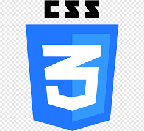

Seja bem vindo ao meu mundo, me chamo Vinicius Fiuza de Oliveira, tenho 18 anos, moro em Embu das Artes - SP, sou formado em técnico de Administração no curso ETIM (Ensino Técnico Integrado ao Médio) realizado na ETEC de Embu.
Atualmente, trabalho na empresa Grupo Medcof como Assistente administrativo, que está localizada na R. Teodoro Sampaio, 1020 - Pinheiros e estou cursando o técnico de Desenvolvimento de sistemas também pela ETEC de Embu
HTML 5
CSS 3
JS ES6